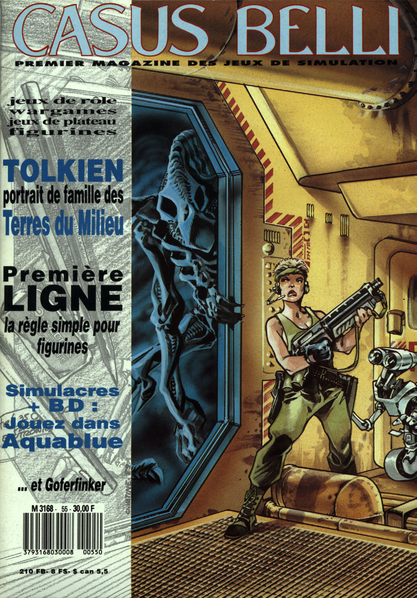
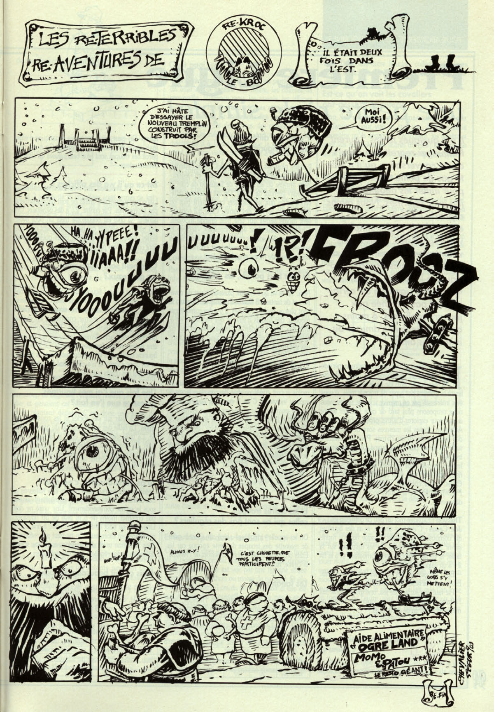

Bienvenue à 1990, année symbolique qui d’ailleurs commence un lundi, et entame le compte à rebours avant l’an 2000, avec plein d’espoirs suite aux événements de 1989 mais aussi des incertitudes : les conflits de nationalités vont-ils ressurgir maintenant que l’Empire Soviétique n’est plus là pour imposer l’amitié entre les peuples ? quand sortirons-nous de la Crise qui a stoppé les Trente Glorieuses et qui a duré durant toutes les années 1980, et semble devoir encore empirer ?
On peut regarder dans le rétroviseur et estimer qu’on ouvrait une ère lumineuse, mais les années 1990 ont laissé plus une trace terne, qui souffre de sa comparaison à tort ou à raison avec des années 1980 pas forcément plus réjouissantes, mais à l’énergie et à la créativité qui auront laissé une empreinte plus marquée. Cela va être donc intéressant de reprendre l’ensemble de cette période au fur et à mesure des numéros d’un Casus première version qui se terminera de façon elle-même symbolique en 1999.
Quelles sont donc les actualités sur ce janvier et février 1990 ? Même si on est en plein Hiver, le dégel en Europe se poursuit. Les premières manifestations se déroulent en Albanie, qui est le dernier réduit staliniste en Europe, et vont conduire aux mêmes réformes que dans les autres pays du Bloc de l’Est. Les souhaits de réunification entre RFA et RDA s’accélèrent alors que la Chute du Mur a à peine deux mois : l’URSS, toujours debout, donne son accord de principe mais déjà les questions d’appartenance à l’OTAN par rapport à un Pacte de Varsovie toujours en vigueur surgissent.
En URSS, le pays doit faire aux antagonismes récurrents entre Azéris et Arméniens, et faire intervenir les troupes après un massacre de la communauté à Bakou de ces derniers. Et pendant ce temps, le premier McDonald’s ouvre à Moscou, consacrant définitivement la victoire de l’Oncle Sam sur Karl…
Mais ce qui réunifie réellement l‘Europe en ce début 1990, ce sont les phénomènes climatiques. Après des hivers très rudes de 1985 à 1987, ce sont des hivers doux qui ont succédé et celui de 1990 ne fait pas exception avec des tempêtes d’ampleur qu’on a oubliées mais qui ont été de vrais désastres matériels et humains, notamment pour l’Hexagone d’abord avec la tempête Daria fin janvier, puis Herta peu de jours après.


Quoi de neuf sinon en France ? Le Gouvernement Rocard est toujours dans sa deuxième année, mais le contexte politique devient plus mouvant au sein du Parti Socialiste, en raison de l’inimité de Mitterrand vis-à-vis de son Premier Ministre ; et aussi du côté RPR avec une fracture entre la ligne souverainiste Séguin-Pasqua par rapport à la ligne européenne Chirac-Juppé.
Ailleurs dans le monde, le coup de tonnerre est la libération de Nelson Mandela le 11 février qui enterre enfin l’Apartheid en Afrique du Sud. Autre verrue d’un passé anachronique qui disparaît et nourrit les espoirs pour le monde à venir ! Dans l’Extrême-Orient, après son plus haut le 29 décembre à plus de 39 000 points, l’indice Nikkei de la Bourse de Tokyo amorce une douloureuse décrue qui va durer sur toute la décennie 1990, dite décennie perdue, même si à l’orée de cette année 1990, cela ne semble évidemment pas perceptible. Cela va pourtant rétrograder le Japon de son rang de superpuissance mondiale proche de dépasser les Etats-Unis, tels que les contextes cyberpunk contemporains le fantasmaient alors. Au même moment, Hong-Kong se dote d’un drapeau alors que le retour de la colonie britannique dans la Chine entame lui-même le compte à rebours pour 1999. Mais qui se soucie vraiment de la Chine en ce début 1990 quand les nouvelles puissances économiques de la région sont justement Hong-Kong ou Taiwan ?
En Amérique, la drogue devient une affaire continentale : chute de Noriega début janvier, conférence de Carthagène pour endiguer le trafic. Le contexte Cyberpunk est aussi là, et également dans l’informatique avec les premières offres commerciales qui proposent un accès à un Internet qui n’existe pas encore tout à fait, mais commencent à établir ses protocoles (le TCP / IP).
Les foyers de tension restent les mêmes, même si la fin de l’affrontement Est-Ouest laisse espérer une détente et un désarmement, et des conflits locaux certes tragiques mais contenus : affrontements entre l’Inde et le Pakistan au Cachemir, le Liban encore dans la guerre civile. En Israël, c’est l’afflux massif d’immigrés de confession juive issus de l’Union Soviétique et autorisés enfin à sortir du pays qui renforce la destinée confessionnelle du pays, et sa difficile coexistence avec la Palestine.
J’arrête ici pour les informations de ce début d’année 1990, et en avant pour ce premier Casus de l’année, 55ème du nom, qui nous arrive courant janvier 1990. La couverture – à mi-chemin entre sa série phare Aquablue et Alien – est d’Olivier Vatine.

L’édito ne pipe mot des bouleversements de la fin d’année 1989. On retrouvera cependant un écho à la fois dans la partie Wargame, forcée de signer l’acte de décès des wargames opposant Pacte de Varsovie à OTAN, et… de Kroc le Bô dont je vous livre la planche, très inspirée de l’actualité d’alors.

L’édito est toujours au diapason de l’effervescence du JDR en France : même si on note certains signes d’essoufflement, on reste dans une période avec une presse rôliste qui propose plusieurs titres, et des jeux et des éditeurs qui continuent d’éclore.
Même si on est en Hiver, les conventions se sont enchaînées : cela prend la place du courrier des lecteurs avec une double page (moins la pub) de debriefing, notamment d’un record de France (c’était alors la mode d’un Guiness Book très populaire) de la partie de la plus haute à 2575m d’altitude. Dans les publicités, on en trouvera une en pleine page particulière annonçant le – je cite – Championnat de France de Jeux de Rôle de 1990 – juniors & seniors. Cette étrange initiative est portée par l’ACF (Association des Clubs de France), que Casus met à l’honneur avec une interview consacrée à son président Willima Milliat sur cette première tentative (ou plutôt seconde si on inclue la FFJSSTde Froideval) de fédérer les clubs de France et de Navarre.
Passons maintenant sur les sorties et les critiques de ce bimestre qui ouvre l’année 1990. La production française reste toujours dynamique. Du Hurlements et du Empire et Dynasties (Anashiva Reahna 3) chez Dragon Radieux, du JRTM (Isengard) et Rolemaster (avec une critique assez neutre de Casus dans les Têtes d’Affiche) chez Hexagonal, du Rêve de Dragon (A L’heure du vaisseau) chez Ludodélire, du Hawkmoon (L’Île Brisée en version revue et très améliorée sur la VF comme le jeu de base) chez Oriflam.
Ca bouge aussi chez Descartes avec du Paranoia (L’Ordinateur frappe toujours deux fois), du Star Wars (l’écran et le module La Bataille pour le Soleil d’Or), du Warhammer (Le Pouvoir derrière le Trône) et sur ses autres licences Appel de Cthulhu et James Bond, c’est aussi repas de réveillon avec outre les JDR (Les Monstres des Contrées du Rêve, Octopussy) les déclinaisons des jeux de Platal (la première édition de Horreur à Arkham et James Bond pour… James Bond donc, merci Captain Obvious).
Et ça bouge encore plus chez Siroz avec Car Wars traduit par CROC, ce qui permet d’embarquer ce dernier dans l’équipe avec l’annonce de la parution d’INS / MV sous les couleurs de Siroz. Croc publie donc son dernier supplément auto-édité pour Animonde – Larmes de Jalousie – pour le début de cette année. Et ça foisonne également chez les nouveaux petits éditeurs : Flamberge (Le Guide de Paris pour Les Divisions de l’Ombre), Aphaia, D3, Les Silmarils. On reparle des trois derniers dans le détail des critiques.
Sur la production US, ça reste toujours assez terne en comparaison, prélude d’un retournement de marché qui met du temps à atteindre le marché français mais qui va se produire lors de cette nouvelle année. Shadowrun commence sa longue carrière avec son premier scénario DNA / DOA, et le Street Samurai Catalog. Space 1889 termine en revanche la sienne, et GDW mise désormais sur le Cyberpunk (supplément Earth / Cybertech pour 2300 AD) après avoir été trop visionnaire avec le Steampunk… ICE verse aussi dans le cyberpunk avec Cyberspace, à l’intérêt manifestement limité entre une reprise des règles de Space Master, et un background calqué sur Cyberpunk, ce qui va donner une Tête d’Affiche dans Casus sur laquelle je reviendrai plus loin. Les autres gammes de l’éditeur tournent à plein régime : MERP (Middle Earth Adventure Guide Book 2, Denizen of the Darwood), Rolemaster / Shadow World (Cyclop’s Vale), Space Master (Disaster on Adanis).
Autre éditeur qui devient très actif : Steve Jackson Games, avec sa gamme Car Wars et sa gamme GURPS, qui annonce le prochain supplément The Prisoner et son magazine Roleplayer. TSR annonce également son programme pour 1990, avec le développement de la gamme de sa 2ème édition, notamment le Complete Fighter’s Handbook qui reçoit une très bonne critique, et donc les autres classes de personnage à venir ensuite sur cette année. Sur les univers, c’est donc le début de l’ère TSR qui délaisse l’héritage de Gygax et Greyhawk, et met le turbo pour se développer dans plein de directions différentes : la suite de Spelljammer, la relance de Dragonlance pour explorer les autres continents de Krynn, le début d’une gamme dédiée à Ravenloft, mais aussi une déclinaison pour Lankhmar. Même D&D est bousculé puisque l’éditeur après avoir revu de façon exhaustive le Known World avec les Gazeteers propose de partir dans les profondeurs du Hollow World.
Enfin, chez les éditeurs plus confidentiels, de la qualité et encore de la qualité : Lion Rampant avec le Saga Pack pour Ars Magica et la 2ème édition de DC Heroes chez Mayfair Games.
Passons aux critiques qui mettent à l’honneur des petits jeux : un Alter Ego déjà précédemment annoncé, jeu de SF français, sur lequel Casus a du mal à s’enthousiasmer. A mettre en balance avec un Aventuriers, jeu aussi français sur les années 1950 et les ambiances à la Bob Morane (le tube d’Indochine est dans l’air), qui présente la grande originalité d’être le premier jeu en format numérique (MultiMondes limitait sa disquette 5 ¼ à une aide de jeu) puisqu’il n’est proposé que sur support disquette 3 et 3 ½ pouces pour Amstrad CPC, Amiga et Atari. Qui a dit que les supports numériques avaient la meilleure espérance de vie puisque le jeu n’aura même pas atteint la possibilité de se faire ficher sur le GROG ?
Enfin Casus nous parle de la Terre Creuse chez le nouvel éditeur Les Silmarils, jeu à la Hawkmoon d’un futur lointain qui aurait régressé en Moyen-Âge, mais qui part du postulat douteux que, contrairement à un Huon et des granbretons fous, le jeu se bâtit sur un héritage nazi. Pierre Lejoyeux essaye d’en défendre l’intérêt, notamment en rappelant qu’il est dérivé lui-même d’une série littéraire éditée chez Fleuve Noir, mais on le sent moyennement convaincu de l’entreprise. La lecture de la critique laisse donc une impression étrange, et c’est aussi ici qu’on peut évoquer la critique de l’autre Pierre (Rosenthal) sur sa revue très mitigée de Cyberspace, où Pierre s’emballe après dans des considérations généralistes sur le genre Cyberpunk, en s’étonnant que Shadowrun se « flagelle » sur le génocide des Indiens, et en concluant que le seul jeu à peu près « normal » serait Cyberpunk parce que son auteur est noir. Pierre tellement cyberpunk qu’il avait rédigé ce papier sous drogue de synthèse ? A relire ici sur le GROG : https://www.legrog.org/jeux/cyberspace/cyberspace-en
On continue dans le futur proche et sombre avec une critique d’une page sur la 2ème édition de Berlin XVIII par @Tristan . Manifestement pas la place de caser une Epreuve du Feu complète et son aide de jeu et scénario d’introduction d’alors. Mais Tristan nous offrira dans le numéro suivant un bon petit scénario pour ce jeu, qui faisait partie de ceux de sa prédilection. Autre chouchou dans les pages de ce numéro, celui d’Anne Vétillard, JRTM, avec un long portrait de famille sur une gamme déjà remarquablement fournie pour ce début 1990. A lire si vous voulez être sûr d’avoir une collection complète ! A noter, les déjà collectors The Court of Ardor in southern Middle Earth et Umbar, Haven of the Corsairs notés parmi les introuvables 😄
Dans les aides de jeu, un Profession Créateur d’Univers forcément trop court avec ses 2 pages et demi pour traiter d’un sujet de cette ampleur. Et encore du Goferfinker qui clôture cet univers inspiré parfois, mais trop foutraque sur comment il a été présenté sur 4 numéros. D’autant que cette dernière partie lui donne enfin ses lettres de noblesse, après avoir tangué comme Laelith entre un truc loufoque et globalement inutile, et quelque chose de plus jouable et avec une originalité qui ne se limite pas à de la déconne. Les PNJ présentés sont ainsi plus inspirés, et le décor ne dépareillerait pas dans Rêve de Dragon ou comme un demi-plan à la Ravenloft dans AD&D (et de magnifiques illustrations de Didier si on aime son style, et des plans tout autant magnifiques mais malheureusment trop réduits par la maquette). Enfin, le scénario de ce numéro permet de bien en démontrer le potentiel.
Enfin,… une adaptation Aquablue pour Simulacres que le FIX n’avait pas manqué de rappeler lors la sortie officielle du JDR chez Deadcrows (https://lefix.di6dent.fr/archives/10670). L’adaptation est elle-même bien trop courte et parcellaire, l’intégrale du premier cycle n’étant pas encore entièrement publiée. Heureusement, le scénario de ce numéro sauve le tout.
Justement les scénarios. On trouvera du Warhammer, du James Bond, et donc du Simulacres Aquablue et du AD&D Goferfinker. Prenons-les un par un comme d’habitude car il y a de la qualité avec ce numéro.
Une bonne recette pour Warhammer confirme le talent de Pierre Lejoyeux pour restranscrire l’ambiance très spécifique du jeu, et ne pas se cantonner à nous livrer un med fan avec les caractéristiques du système de Warhammer. Il sera ici question d’un voyage avec une galerie de PNJ haute en couleur et dans le ton, pour plusieurs rebondissements à venir. Dommage juste que le nœud de l’intrigue repose sur un « allez voir ailleurs si j’y suis » qui sera bien fragile si les PJ sont naturellement soupçoneux. Plutôt donc à faire jouer avec un groupe de novices pour faire découvrir l’ambiance lourde du Vieux Monde, et aménager des surprises et moments de jeu qui devraient rester mémorables.
Rien n’est à jamais fini pour James Bond est aussi bien dans le ton du jeu, et des années 1980, sur fond de chasse aux nazis en Amérique du Sud. Pareil que pour le Warhammer, le format un peu court peut laisser un goût marqué de linéarité, mais le dépaysement est au rendez-vous et l’enjeu de fin change des menaces du SPECTRE, sans dénaturer pour autant James Bond.
Planète bleue détruire laser rouge est un scénar offert par le regretté Thierry Cailleteau, scénariste officiel d’Aquablue, et qui propose de mettre en application son adaptation Simulacres avec une histoire qui s’insère juste à la fin du tome 1, esquisse quelques révélations à venir de l’univers alors qu’on est qu’à deux tomes parus, et fonctionne très bien avec sa base très orientée action. Je l’ai fait jouer 30 ans plus tard avec le JDR officiel en convention et c’est passé crème.
Enfin, Faut pas se payer la fiole des Gnobelains est un scénario de Denis Beck qui a définitivement quitté la région de Laelith (c’est d’ailleurs un scénario non repris dans le recueil de BBE qui ne s‘était pourtant pas trop embarrassé de prendre un certain nombre d’oeuvres de Denis pas spécifiquement écrites pour la Cité Sainte). Retors et imaginatif sur fond de lutte entre magos, et de périls en pays Goferfinker, cela m’a donc réconcilié avec ce décor et surtout donné envie de ressortir ce scénario si je suis un jour en quête d’une bonne intrigue pour un med fan.
Côté Jeu de Plateau, c’est l’abondance, manifestement dans la lignée de ce qui est paru pour Noël 1989. On découvre d’abord le très original Aristo via les Têtes d’Affiche, puis on a le droit à des revues plus longues sur Space Hulk, Zargos, Excalibur, Illuminati, Colonisator, Fief 2, et Diplomatie. A une époque où on était matraqué par les Trivial Pursuit ou La Bonne Paye, ces pages de Casus Belli permettaient d’aller explorer un univers de jeux de société aux mécanismes bien plus élaborés de façon visionnaire avant que ceux-ci n’explosent quinze ans plus tard.
La partie Wargames est, à nouveau avec ce numéro, limitée en raison de l’espace pris par les Jeux de Plateau : une présentation d’Heroika, des corrections de règles pour 1941 publié dans le numéro précédent, une règle de jeu pour figurines – Première Ligne – présentée comme une « petite règle simple » mais avec force tableaux dans tous les sens, et un scénario pour la tester. Et une partie bibliographie intéressante autour du combat aérien, ainsi que le livre Le Brise Glace de Victor Suvorov, vaste fumisterie mais alors très prise au sérieux faute d’archives soviétiques ouvertes, et qui essaye de prétendre que Staline était sur le point de préparer une invasion méthodique de l’Allemagne nazie et de l’Europe dès 1941, très peu de temps après le déclenchement de Barbarossa. Quand on sait l’impréparation de l’armée soviétique et la psychologie du Petit Père des Peuples d’alors, on ricane doucement mais ça permet de servir de support à un superbe what if pour 1941, pourvu qu’on change drastiquement l’ordre de bataille soviétique.
On lira enfin avec attention l’édito de Laurent Henninger que j’évoquais en introduction et qui traite des bouleversements des dernières actualités pour démontrer que la réalité submerge en général la prospective, et s’essaye pourtant lui-même à de la prospective  conflits sur les nationalités à venir, désir de puissance des Etats-Unis et embourbement possible de son armée surdimensionnée et inadaptée dans les conflits locaux. Pas mal, même si la première Guerre du Golfe à une année près va d’abord démontrer le contraire.
conflits sur les nationalités à venir, désir de puissance des Etats-Unis et embourbement possible de son armée surdimensionnée et inadaptée dans les conflits locaux. Pas mal, même si la première Guerre du Golfe à une année près va d’abord démontrer le contraire.
On finit sur la Ludotique / Inspis à nouveau rangés en fin de magazine. Sur la première, on retiendra surtout la revue de Indiana Jones and the Last Crusade, que Casus recommande pour son vrai faux carnet d’Indy, à une époque où les coffrets de jeu informatique étaient parfois bien remplis, ledit carnet pouvant servir d’aide de jeu sur un scénar de JDR. Casus sinon fait un peu le deuil sur sa capacité de suivi de la production qui s’accélère sur ce domaine et en profite donc pour chroniquer ses confrères d’alors – Tilt, Génération 4 et Amstrad 100% - et donner quelques gentils coups de griffe sur leur niveau de maturité rôliste (voire de maturité tout court). A noter aussi la chronique de leurs services minitel qui donne déjà une idée du web à venir. Je passe sans m’arrêter sur l’inspi BD beaucoup trop fournie aussi à cause des fournées de Noël pour en faire le détail. Quant à Roland Wagner, il nous livre aussi une chronique fournie de livres indiqués pour avoir été mis sous le sapin : soit des beaux livres, notamment l’album consacré à la série TV Le Prisonner, soit une avalanche de classiques avec du Lovecraft, du Fritz Leiber, du Moorcock, du Orson Scott Card. Et dans le plus confidentiel, déjà du GRR Martin mais en format SF et chaudement recommandé par Roland (L’agonie de la lumière), et aussi Michel Jeury (Le Temps incertain), ou Louis Thirion (Ysée-A).
On terminera enfin sur un presque publi-rédactionnel improvisé, consacré à l’ouverture annoncée de Planète Magique puisque le collaborateur de Casus sur la rubrique Métalliques (désolé, je ne m’arrête jamais dessus, n’ayant aucune culture figurines), Frédéric Bassot a contribué au décor de ce lieu. Justement de quel lieu s’agissait-il car le nom de Planète Magique ne m’évoquait alors rien et que le petit encart dans ce Casus faisait saliver ? Je me suis donc replongé dans les archives du web pour retomber dans une vraie histoire de génie à la française : imagination débridée, projet pharaonique et gouffre économique. Pour les quelques veinards qui auront pu tenter cette expérience, ils auraient pu trouver des lieux immersifs comme on en a aujourd’hui dans des dizaines de salles d’escape game (et notamment en ce début 1990 une salle inspirée de Talisman et une autre des Cités d’Or sur lesquelles Fred Bassot a œuvré). Et manifestement les animations, basées en partie sur une informatique trop en avance par rapport à ses capacités d’époque, n’étaient elle-même pas très au point. Bref, une histoire assez fascinante à relire et sur laquelle je conclue cette revue avec les quelques ressources trouvées sur ce sujet :
Des témoignages de cette expérience éphémère :